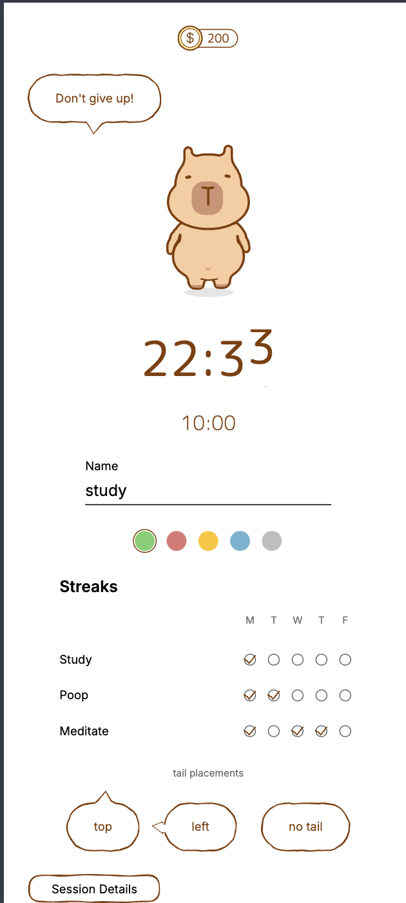

Variable width
True ribbon fills like Figma Dynamic Stroke - not a constant SVG stroke.
wobble-svg v0.2.0
Generate portable SVG paths. Nothing to configure but wobble itself - everything on this page is running live from the package.
Why Wobble?
True ribbon fills like Figma Dynamic Stroke - not a constant SVG stroke.
Same seed, same path. Design systems and tests stay reproducible.
Plain path data. Web, React Native, Canvas, print - zero DOM APIs.
Where to use Wobble?
Outputs simple SVG path d strings you can use anywhere: web <path>, React Native (react-native-svg), Canvas, or print. Works in any framework�Xno DOM required.

Get started
Click to copy. Zero deps, ESM + CJS, web and React Native.
Build a boundary, then generate a ribbon path. Core exports:
roundedRectBoundarygenerateWobbleRibbongenerateWobblePathanimateWobbleRibbonimport {
roundedRectBoundary,
generateWobbleRibbon,
} from 'wobble-svg';
const boundary = roundedRectBoundary(200, 80, 16);
const ribbon = generateWobbleRibbon(boundary, {
seed: 42,
halfWidth: 1.2,
frequency: 0.05,
wiggle: 1.2,
closed: true,
});
// <path d={ribbon.fillPath} fill="white" />
// <path d={ribbon.ribbonPath} fill="#2b2420" fill-rule="evenodd" />Next step
Install the package, star the repo, or copy a prompt your agent can use to start genrating your own unique ribbon paths.